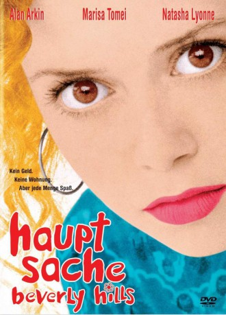

#7578 Hauptsache Beverly Hills
Alternativ: Slums of Beverly Hills
 
 IMDB-Wertung: 6.6 / 10
IMDB-Wertung: 6.6 / 10  Metascore: 0
Metascore: 0 
Vivian Abramowitz lebt mit ihren Brüdern und ihrem Vater am äußersten Rand des Schulbezirks von Beverly Hills in einem billigem Einzimmer-Appartement. Für den Vater ist daher die Bildung der Kinder am wichtigsten. Und Vivian muß grausig miterleben, wie ihre aufblühende Sexualität zwangsweise durch das eingeschränkte Zusammenleben der Familie zum Familienspektakel wird.
Jahr: 1998
Dauer: 91 Minuten
FSK: 12
Land: USA Studio: Twentieth Century FoxTonspuren: DD2.0 - ,
Untertitel:
Auflösung: 1080p (1920x1040) Größe: 7833 MB
Genre: Drama, Komödie
Regisseur: Tamara Jenkins
Drehbuch: Tamara Jenkins
Soundtrack: Alvin Lee
Darsteller:
Datei: X:\1998\Hauptsache Beverly Hills (1998, FSK12, 1920x1040).mkv seit 21.11.2017
Festplatte: HD 1996-2002
 Es gibt insgesamt 86 Filme in der Gruppe '1998'
Es gibt insgesamt 86 Filme in der Gruppe '1998'